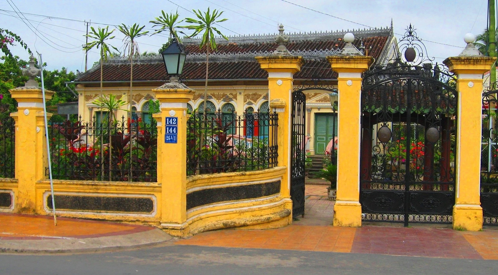

Hình Ảnh Nổi Bật



Giới Thiệu
Nhà cổ Bình Thủy được xây dựng từ cuối thế kỷ 19, là một trong những ngôi nhà cổ đẹp và nguyên vẹn nhất Nam Bộ, mang phong cách kiến trúc Pháp kết hợp với nét truyền thống Việt Nam.
Ngôi nhà nổi bật với hệ thống cột gỗ lim, nền nhà lát gạch bông nhiều màu nhập từ Pháp, cùng khu vườn cổ rợp bóng cây xanh và hoa kiểng quý hiếm được gìn giữ qua nhiều thế hệ.
Nhà cổ Bình Thủy từng là bối cảnh quay của nhiều bộ phim nổi tiếng, trong đó có "Người Tình" (The Lover), thu hút đông đảo du khách trong và ngoài nước đến tham quan, tìm hiểu kiến trúc và lịch sử.
Thông Tin Tham Quan
- Địa chỉ: 142/144 Bùi Hữu Nghĩa, Quận Bình Thủy, Thành phố Cần Thơ
- Giờ mở cửa: 08:00 - 17:00
- Giá vé tham quan: 20.000 VNĐ/người
Hoạt Động Nổi Bật
Tham quan kiến trúc cổ
Chụp ảnh cổ trang
Vườn hoa kiểng
Tìm hiểu lịch sử văn hóa
Hướng dẫn viên tại chỗ